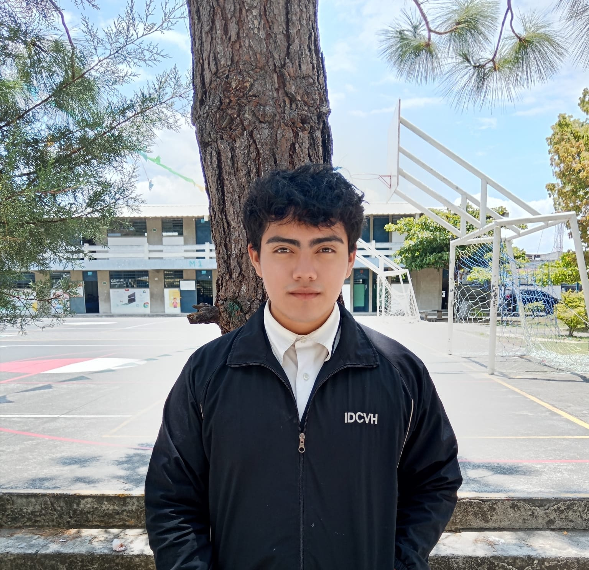
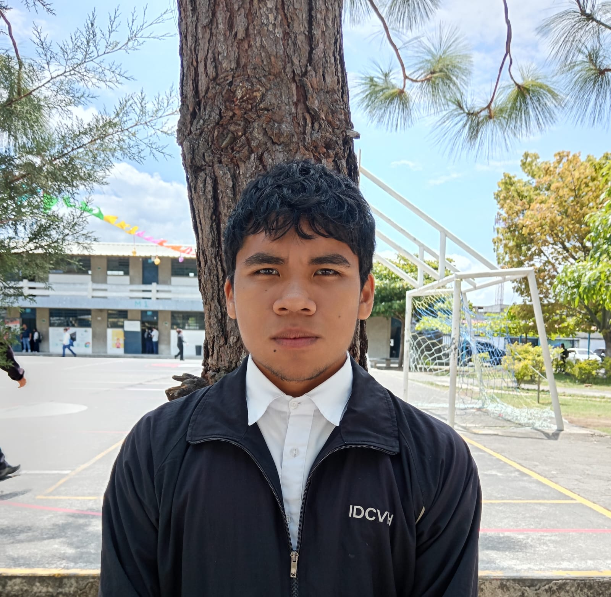
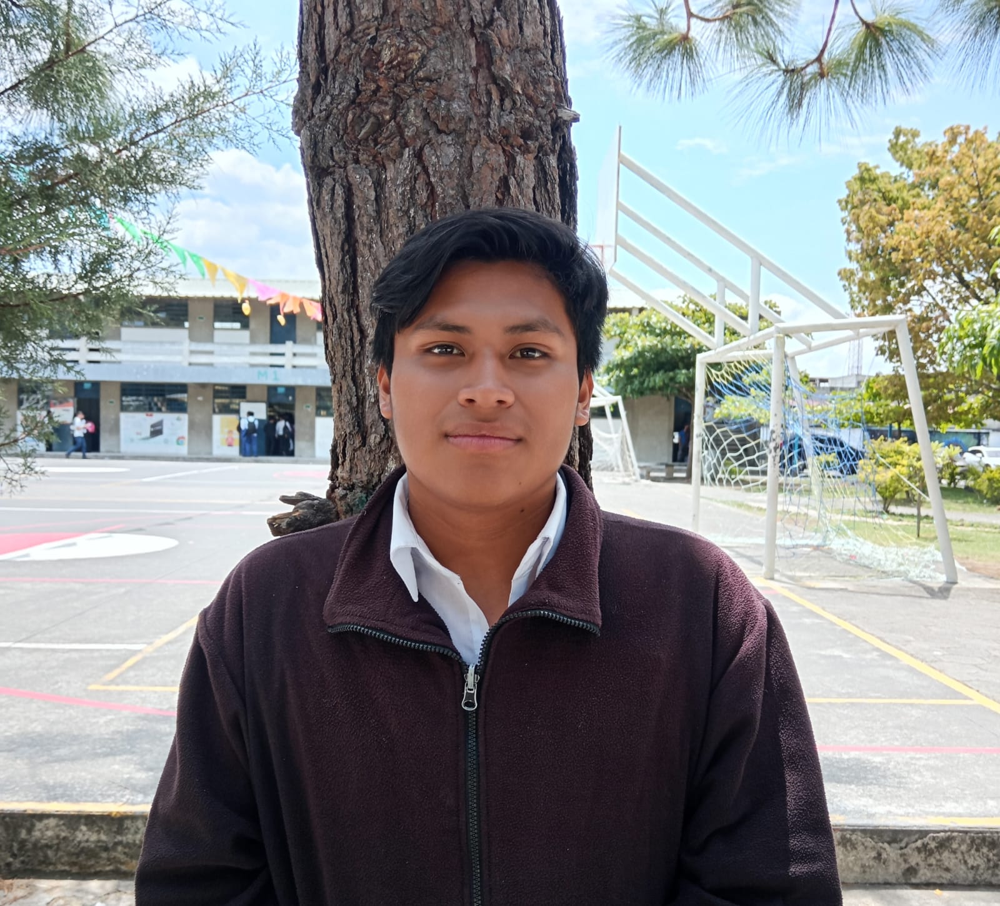
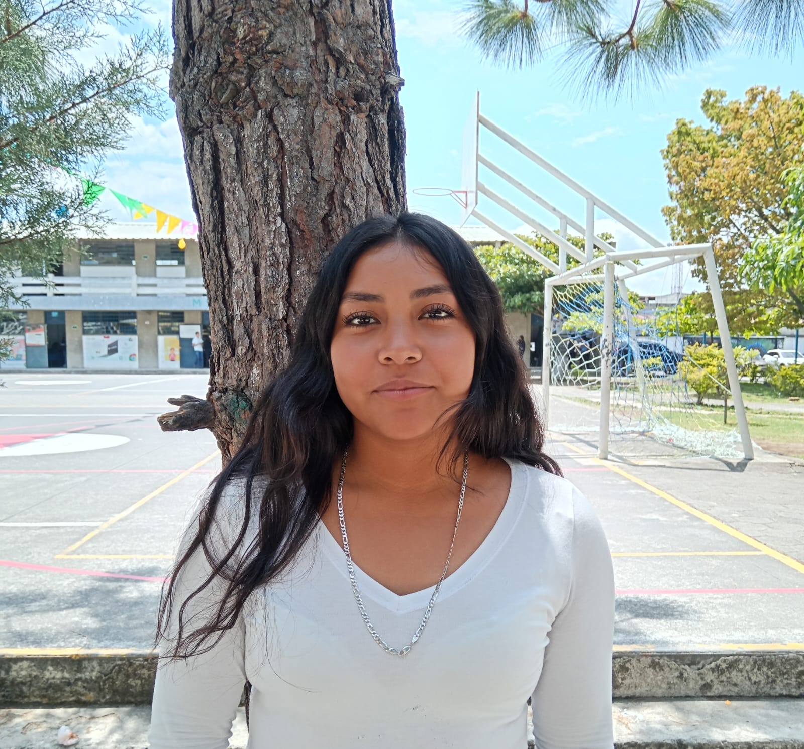
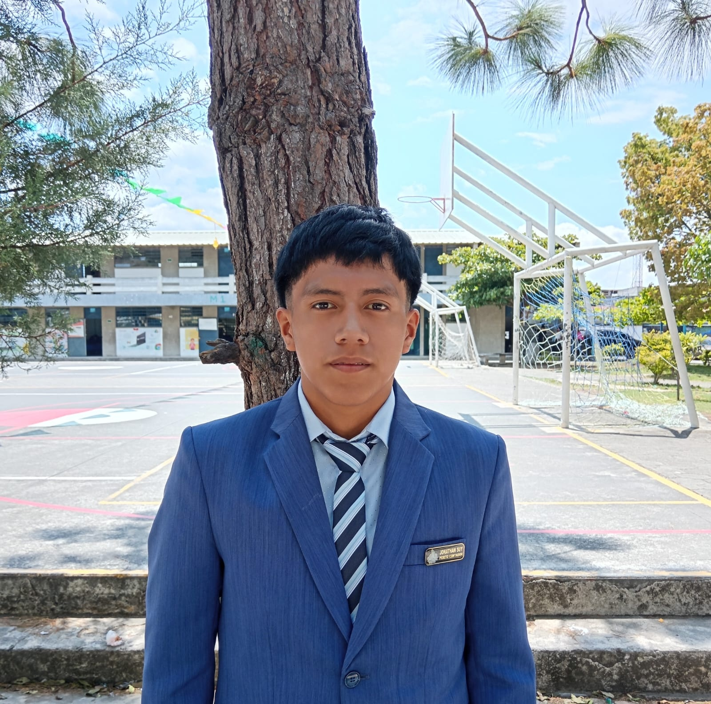
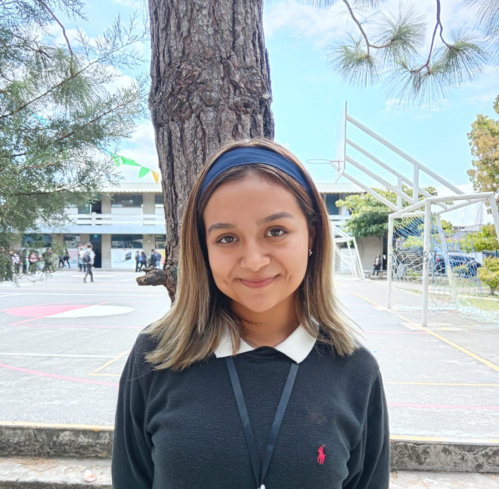
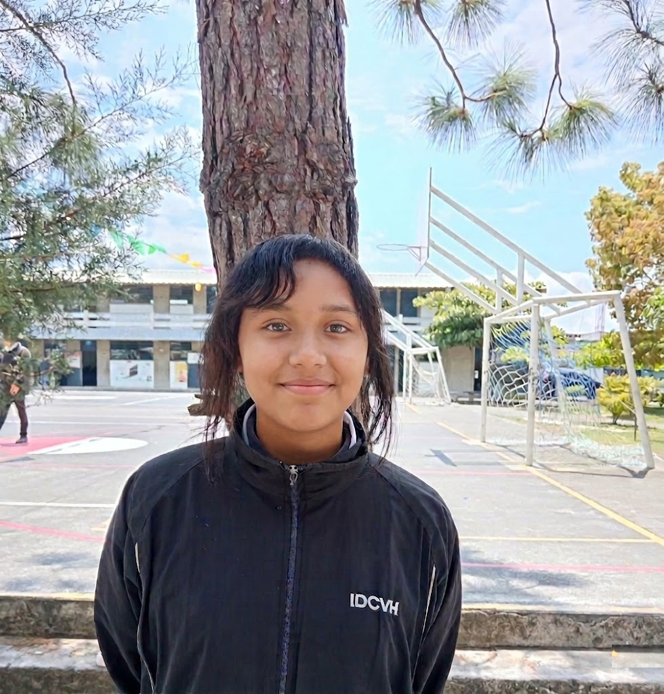

Bienvenidos
Somos una marca de ropa urbana de estilo minimalista e industrial. Nuestra estética se basa en la pureza de los materiales y la simplicidad de las formas.
Productos
Vult Essential Tee


Camisa elaborada en algodón de tacto suave y alta transpirabilidad. Incorpora un tejido con delicadas líneas verticales en relieve que brindan elasticidad y un ajuste favorecedor sin deformarse. Su acabado refinado y textura sutil aportan una sensación suave, flexible y confortable.
Q85.00
Northline


Los northline están confeccionados con fibras de algodón orgánico de alta densidad, integrando una estructura de tejido de punto visible que garantiza una durabilidad superior y una estética minimalista.
Q50.00
Colección V-Aviator


La colección V-Aviator es un set premium de beanie en lana acrílica y gorra de béisbol en algodón de alta densidad, en tono crema con detalles en rojo oscuro y emblema metálico de águila en níquel cepillado. Combina materiales duraderos como algodón transpirable, lana acrílica cálida y costuras en poliéster resistente, logrando un diseño minimalista, cómodo y de acabado refinado para un uso casual y smart casual.
Q125.00
Tank Top


El tank top está confeccionado en algodón suave y transpirable. La prenda presenta una textura de finas líneas verticales en relieve, que aportan alta elasticidad y permiten un ajuste cómodo al cuerpo sin deformarse. Visualmente, el tejido luce un patrón sutil y uniforme; al tacto, ofrece una sensación ligeramente texturizada, suave y flexible.
Q80.00
Raw Denim Pants


Los Raw denim pants están hechos de 100% algodón. Al ser un corte que busca volumen y una estructura pesada, el algodón puro es ideal porque; Es resistente y duradero, Mantiene la forma "ancha" sin pegarse al cuerpo, Permite que la piel respire, compensando el exceso de tela.
Q220.00
Hoddies


Confeccionada con tejido acolchado premium de tacto suave, esta hoodie combina confort térmico, ligereza y un acabado minimalista de alta calidad. Su patrón capitonado aporta textura y estructura, mientras que el interior afelpado brinda una sensación cálida y envolvente. Diseñada para un estilo contemporáneo donde la comodidad y la estética se encuentran en equilibrio.
Q180.00
Varsity Jackets


La chaqueta técnica VULTURES fusiona la resistencia del matte nylon con la comodidad del algodón orgánico. Bajo el lema "Transformando lo cotidiano en extraordinario", esta prenda de estilo industrial ofrece durabilidad y un diseño minimalista con detalles metálicos y costuras reforzadas. Es el manifiesto de resiliencia y vanguardia ideal para quienes buscan autenticidad y funcionalidad en la jungla de asfalto.
Q250.00
Lista de productos
| Producto | Descripción | Precio |
|---|---|---|
| Vult Essential Tee | Camiseta premium de algodón suave con ajuste cómodo y estilo minimalista. | Q85.00 |
| Northline | Diseño urbano en algodón orgánico con acabado resistente y moderno. | Q50.00 |
| Colección V-Aviator | Set premium de beanie y gorra con detalles exclusivos y estética industrial. | Q125.00 |
| Tank Top | Tank top elástico y transpirable con textura suave y ajuste perfecto. | Q80.00 |
| Raw Denim Pants | Pantalones baggy en denim 100% algodón con estructura resistente. | Q220.00 |
| Hoddies | Hoodie acolchada premium con interior afelpado y máxima comodidad. | Q180.00 |
| Varsity Jackets | Chaqueta técnica de estilo industrial con materiales duraderos y modernos. | Q250.00 |
Nosotros
Misión
Nuestra Misión es dar una nueva vida a la moda. En Vultures, buscamos transformar lo cotidiano en extraordinario, ofreciendo moda urbana de alta calidad, liderar la vanguardia del diseño contemporáneo, capturando las tendencias globales para adaptarlas al espíritu rebelde de nuestra comunidad. Nos comprometemos a ofrecer innovación constante y un estilo impecable que anticipe el futuro de la moda.
Visión
Ser una marca de ropa reconocida a nivel nacional e internacional por su estilo urbano auténtico, innovador y con identidad propia, capaz de inspirar a las personas a expresar quiénes son sin miedo.
Valores
- Autenticidad
- Resiliencia
- Creatividad
- Calidad
- Inclusión
- Compromiso
- Evolución constante
Nuestro Equipo

Joshua Alexander Quiñonez Sontay
Gerente

Oscar Steven Rodas Chajón
Atención al cliente

Kevin Estuardo Ruíz Vásquez
Marketing

Karla Jazmin Sian Martinez
Diseño

Jonathan Joel Suy Guarcas
Producción

Fergie Marivi Urias Martínez
Diseño

Julissa Rebeca Santiago Há
Logística
Testimonios
"Excelente calidad y buen precio" - Cliente 1
"Muy recomendados" - Cliente 2
☏ Contacto
Celular: 1234-5678
Email: Vultures@Vultures.com
Instagram: @PVultures_gt